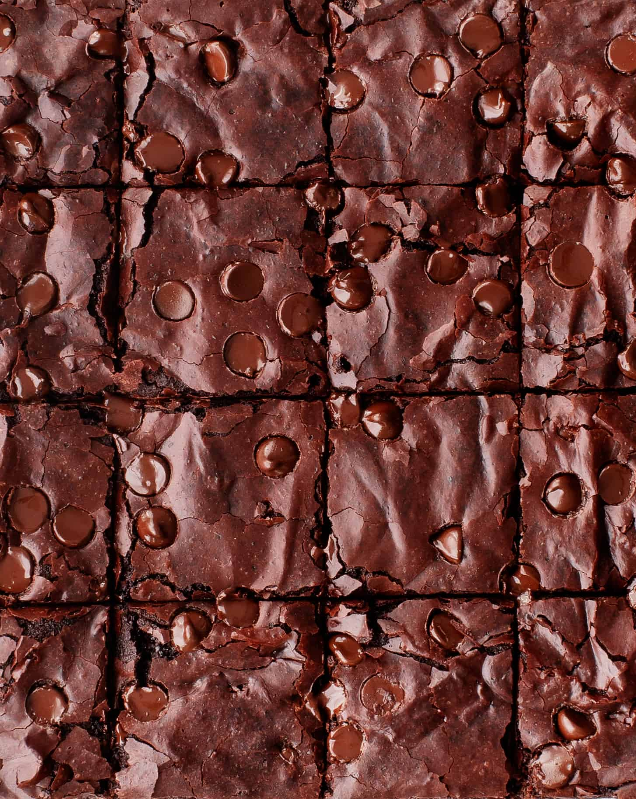
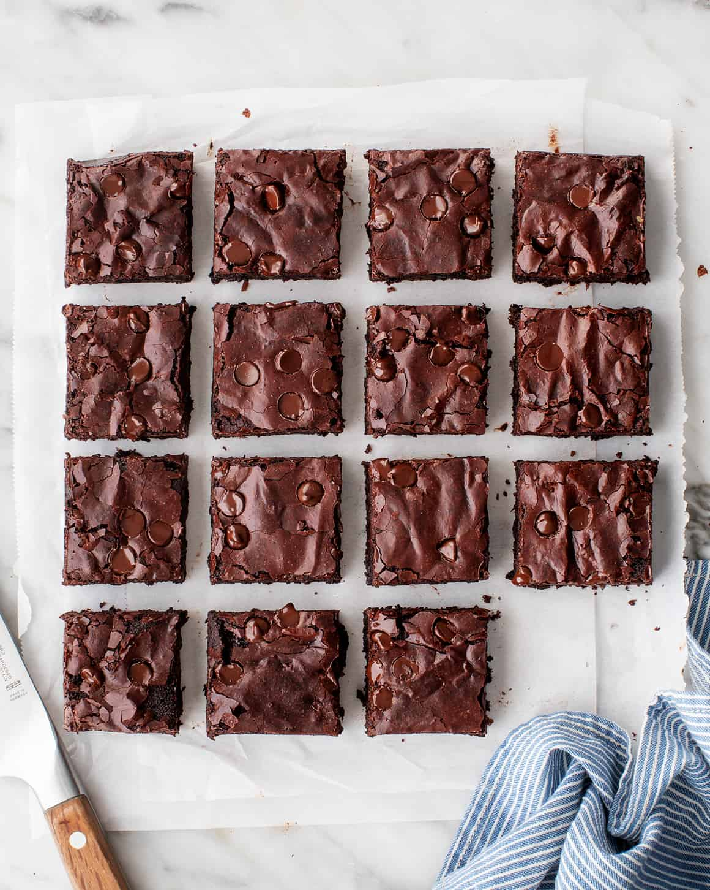
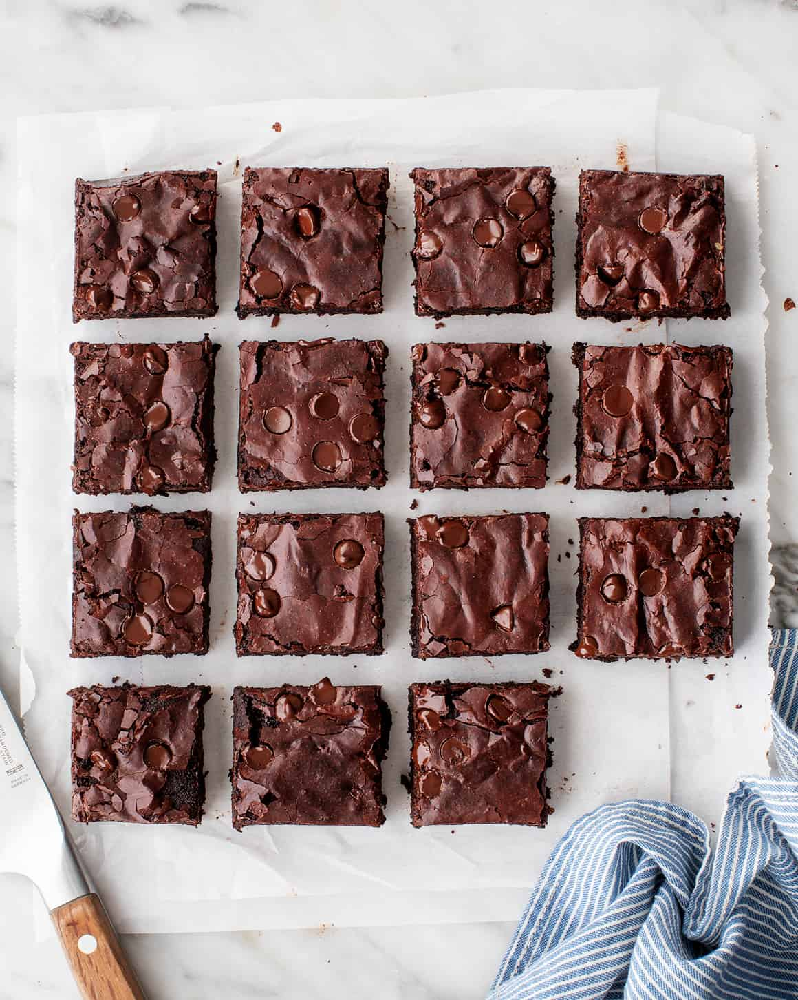

Chocolate Brownies
The BEST brownie recipe! With crispy edges, fudgy middles, and rich chocolate flavor, these
homemade brownies
will disappear in no time. Check out the original source here.
Serves 16
Dietary Restriction: Contains Eggs, Not Gluten Free, Not Vegan
Total time: 1hr 15mins
Bake time: 40-48mins
Equipment
- 8x8 Baking Dish
- Cooking Spray
- Parchment Paper
Ingredients
- 1 1/2 cups granulated sugar
- 3/4 cup all-purpose flour
- 2/3 cup cocoa powder, sifted if lumpy
- 1/2 cup powdered sugar, sifted if lumpy
- 1/2 cup dark chocolate chips
- 3/4 teaspoons sea salt
- 2 large eggs
- 1/2 cup canola oil or extra-virgin olive oil
- 2 tablespoons water
- 1/2 teaspoon vanilla
Instructions
- Preheat the oven to 325°F. Lightly spray an 8x8 baking dish with cooking spray and line it with parchment
paper. Spray the parchment paper.
- In a medium bowl, combine the sugar, flour, cocoa powder, powdered sugar, chocolate chips, and salt.
- In a large bowl, whisk together the eggs, olive oil, water, and vanilla.
- Sprinkle the dry mix over the wet mix and stir until just combined.
- Pour the batter into the prepared pan (it'll be thick - that's ok) and use a spatula to smooth the top. Bake
for 40 to 48 minutes, or until a toothpick comes out with only a few crumbs attached (Note: it's better to
pull the brownies out early than to leave them in too long). Cool before slicing. Store in an
airtight container at room temperature for up to 3 days. These also freeze well!
Notes
- If you'd like to reduce the sugar, I've had success with 1 cup granulated sugar instead of 1 1/2 cups.
- I like to use olive oil because it's what I keep on hand and I enjoy the pairing of olive oil with
chocolate. Keep in mind that you will taste it here. For a more neutral flavor, use canola oil.
- When these brownies come out of the oven, they'll be super gooey in the middle. Allow them to cool
completely, about 2 hours, before you slice into them to give them a chance to set up. They'll continue to
firm up the longer they're out of the oven. If you still prefer a firmer brownie, store them in the fridge.
Images



 

Recipe Websites
- Lady and Pups - The design of this website is a little different than
most recipe websites. However, the photos on the website are very detailed, showing textures up close and
giving a better idea of how a dish should turn out. Additionally, the commentary can at times be humourous.
- King Arthur Baking Company - This website is very colorful
and offers many recipes that tend to focus on baking but sometimes venture into food. A helpful section is
the All Recipe Categories section that lets a user easily navigate to what he or she is looking for.
- Taste of Home - This website is good for when you're unsure what
to make. There are many articles listed that follow the likes of "[Large number] of Recipes for [Specific
Occasion], such as 75 Cheap Dinner Ideas for Weeknight Meals and 65 Tailgate Recipes to Wash
Down with a Beer.
Non-Recipe Websites
-
The New Yorker - This website implements text identity very well.
This font is easily recognizable as associated with The New Yorker. Additionally, I think using different
sized boxed areas to present different articles could translate to a recipe website.
- National Geographic - This website stays simple while
de-emphasizing text. Photos take prominence, rightfully conveying what the organization's focus is.
- Stripe - This website is designed well and has a structure like a lot of
other tech companies. Gradients and graphics that change when scrolling are present throughout, along with
the use of symbols.